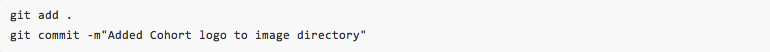
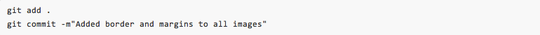
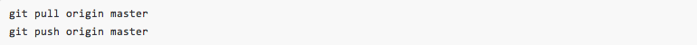
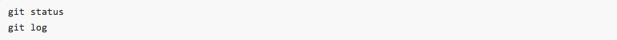

These tips are for Mac users.
The following instructions in this section is sourced from https://gist.github.com/dbc-challenges/f5bfc65d4abd64965b4d
Here is the Git Workflow. Instructions for each step is outlined below.
Every time you make a notable change, you'll want to add and commit these changes. Especially as you're starting out, err on the side of committing extremely often with incremental changes.Like when you add new media:
Or when you modify the styling of image elements:
When you are ready to push up your changes to github.com, get in the habit of first pulling down the last updated copy from github. Usually when you're working on github, you will be working on a team, and it's important to pull the latest copy of your repo to make sure you're not missing any changes. Git will automatically merge all your recent changes into the github master copy. Then, push your repo up to github.com.
You can see the status of your commits and stage by using these commands:
Question
Is there a way to re-set git on my computer? Will uninstalling it, then re-installing git work? I accidentally put my whole drive in the repository. I tried to do a hard reset, but when I git log I can still see all the files in there.
Answer
Source: https://coderwall.com/p/euwpig